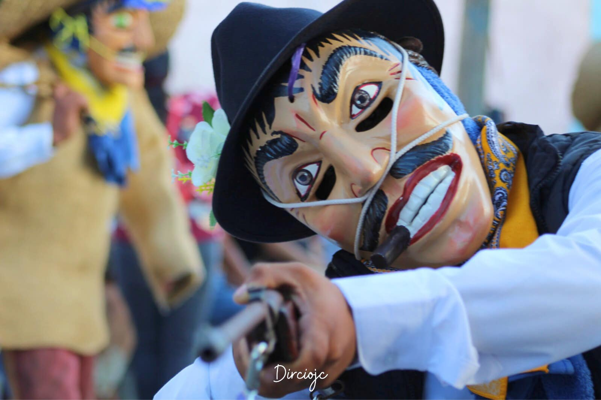

La Feria de la Candelaria en Zumpango del Río, Guerrero, es una festividad anual que se celebra del 1 al 15 de febrero en honor al Señor de las Misericordias, patrono de la localidad. Esta tradición se remonta al año 1847, cuando se fundó la parroquia dedicada a este santo.
La Feria de la Candelaria es una de las más antiguas y representativas del estado de Guerrero, y constituye una oportunidad para que tanto habitantes como visitantes disfruten de la riqueza cultural y las tradiciones de la región.